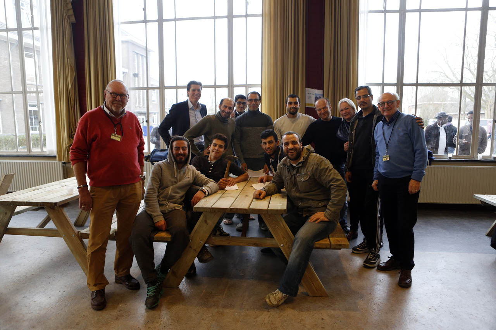
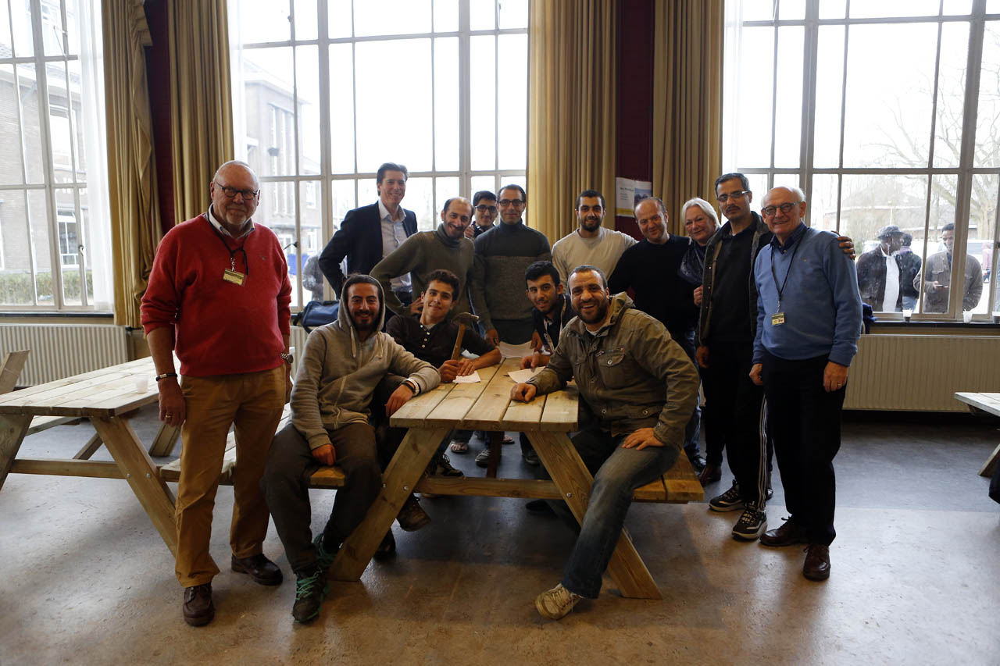
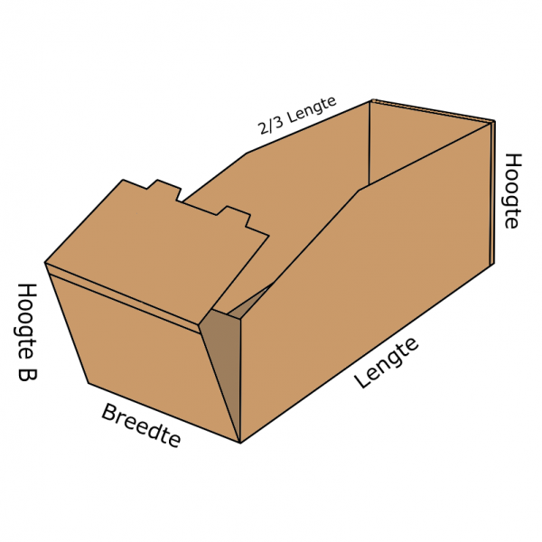
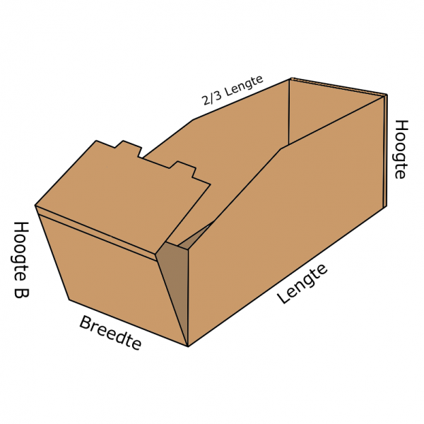
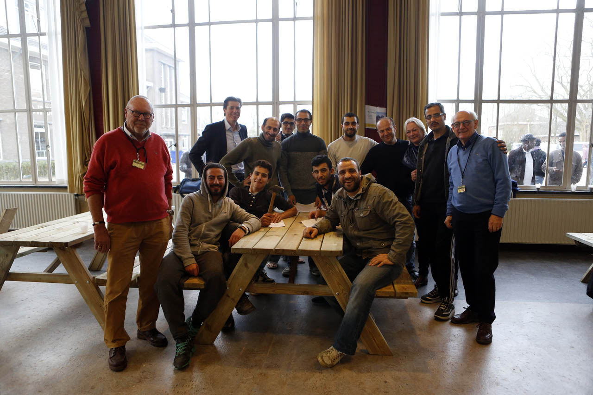
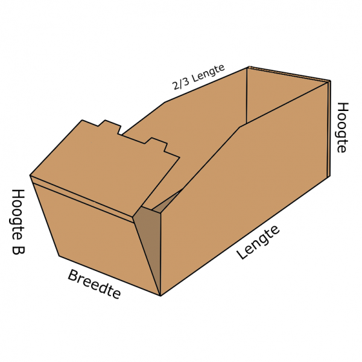
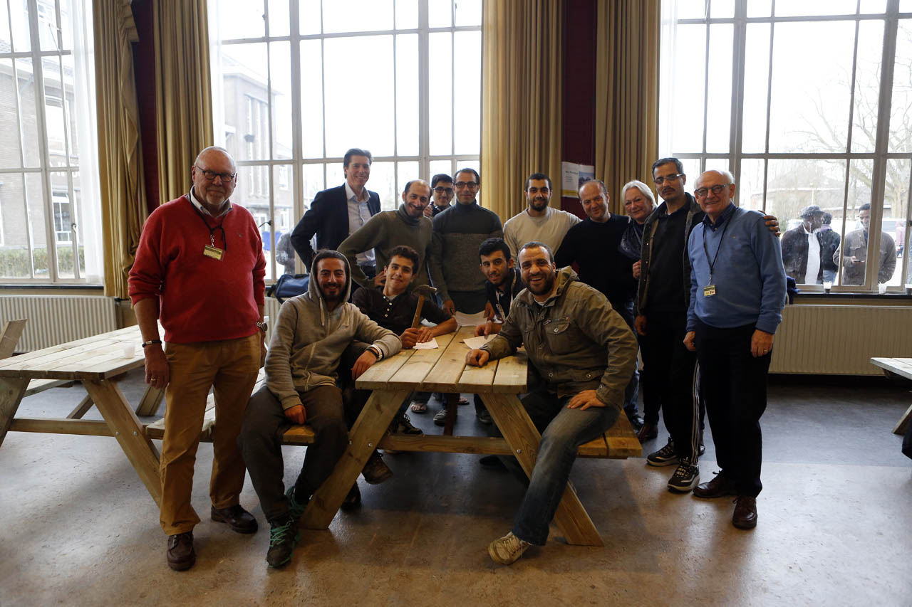
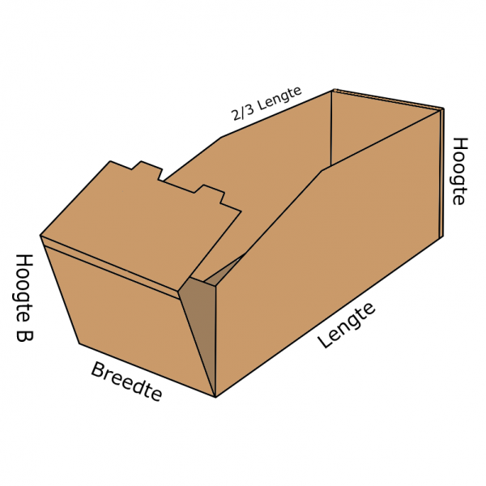

 


 



Moulham Al Boushi:,Ik kom uit Syrie en ik woon in Nederland,ik heb een mooi vrow en 2 kinderen.
Ik ben een toegewijd, hard werkend en meelevend persoon, die in staat is om zowel onafhankelijk als in een team te werken. Met uitstekende contactuele vaardigheden heb ik de mogelijkheid om anderen te motiveren. Ik ben resultaatgericht en werk altijd aan een oplossing binnen de gestelde tijd.
en ook met hun als Bestuurder riksja Mijn collega met oude mensen in de bos
| first name | last name | telefonnummer | |
|---|---|---|---|
| Moulham | Alboushi | molhamboshi@gmail.com | 12345 |
| Massa | Alboushi | massa@ksjdlshhff.com | 7890505 |
| Maha | bitar | maha@ksjfdidj.nl | 983756 |
oooii